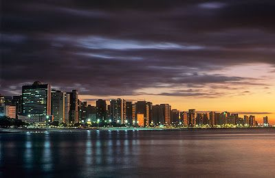

A cidade de Fortaleza, capital do Estado do Ceará e 5 maior do País, é a capital brasileira mais próxima da Europa (5.608 km de Lisboa, em Portugal) e está a apenas 5.566 km de Miami (Estados Unidos)
A história da cidade de Fortaleza (municipio brasileiro e também capital do estado do Ceará) é o resultado de interações entre os moradores nativos (os indios) e os europeus.
A cidade é conhecida por suas praias, com falésias vermelhas, palmeiras, dunas e lagoas. As tradições folclóricas da cidade podem ser vistas em apresentações de dança no Theatro José de Alencar, construção em estilo art nouveau inaugurada em 1910. Outro destaque arquitetônico é a Catedral Metropolitana, em estilo neogótico